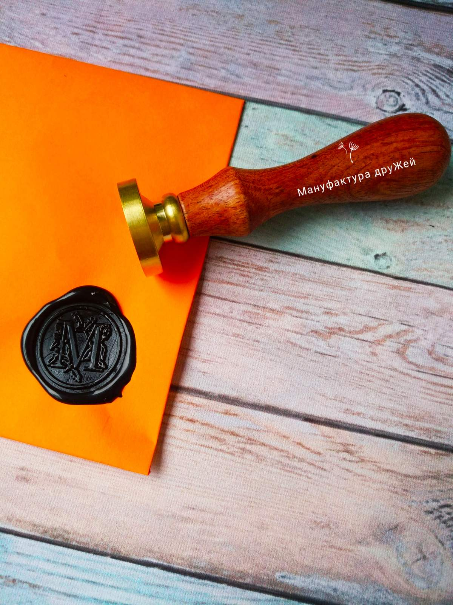

Наші квести захоплюють!
Для гравців різного віку
Готовий домашній квест на будь-яку тематику
Економія Вашого часу
Робимо світ цікавішим або про що ми намагаємося пам'ятати, створюючи новий квест. Сьогодні квест-індустрія набирає обертів. Ми бачили різні варіанти квестів, але що все-таки відрізняє квести Мануфактури від інших.
- По-перше, у кожному нашому квесті є легенда. Тобто не просто картки із завданнями та тематичними картинками, а перед Вами відкривається цілий новий світ або розгортаються події казки. У кожній картці Ви знайдете частину легенди, безпосередньо пов'язаної із завданням.
- По-друге, створюємо та підтримуємо атмосферу. Немає сенсу говорити про важливість атмосфери у грі. Майже до кожного квесту ми надсилаємо подарунок в електронному вигляді, в якому Ви знайдете тематичні ігри, музику, фільми та різноманітні поради, як зробити квест максимально цікавим для гравців, а також ще й можливість розважити інших гостей. Якщо подарунок до квесту не передбачено, то в інструкції ми даємо напуття, як перенести гравців у паралельну реальність. Навряд чи хтось ще настільки морочитиметься.
- По-третє, Мануфактура приймає замовлення виготовлення квестів на Вашу тематику. Це складний процес, що займає багато часу. Але той, хто приносить багато нових знань і відкриттів. І, нарешті, в квестах від МД практично не використовуються сучасні гаджети. Їх і так достатньо у нашому житті. Нехай відпочивають очі та попрацюють мізки під час гри!
Якщо ви не знаєте, як розважити гостей або подарувати подарунок, то ви прийшли за адресою. У нас Ви знайдете квести до будь-якого свята, на різні тематики, для будь-якого віку та статі!